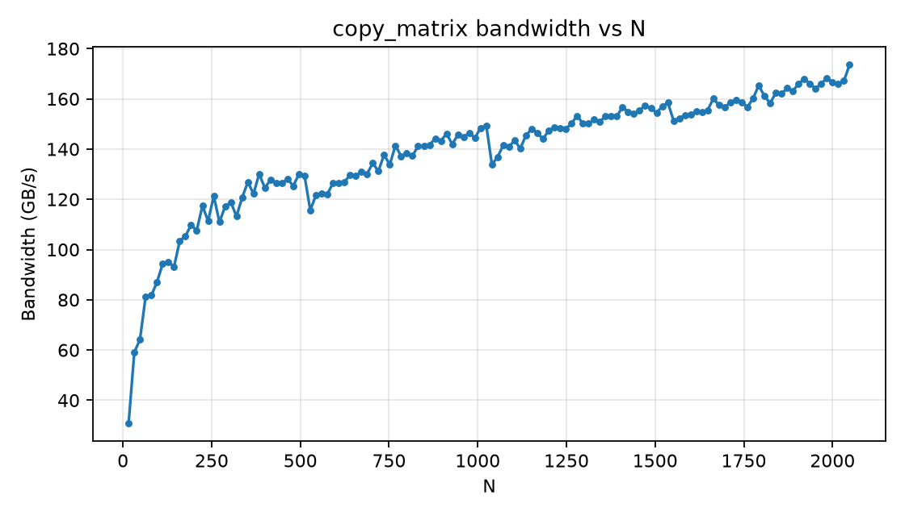

GPU Architecture and cuTile
Task 1: GPU Device Properties
Using the given function, we obtained the following information about the GPU device:
L2CacheSize: 24.00 MiB
MaxSharedMemoryPerMultiprocessor: 100.0 KiB
ClockRate: 2.418 GHz
Task 2: Matrix Reduction Kernel
In this task, we had to write a cuTile kernel that reduces a 2D input matrix of arbitrary shape (M, K) along its last dimension (K), producing a 1D output vector of shape (M,) that contains the per-row sum. For the reduction, the kernel relies on ct.sum to perform the summation of elements along the specified dimension:
1@ct.kernel
2def matrix_sum_reduction_kernel(input_matrix, output_vector, tM: ct.Constant[int], tK: ct.Constant[int]):
3 block_id = ct.bid(0)
4 # load a tile of shape (tM, tK) with zero-padding
5 # -> only one tile in K dimension (index 0)
6 input_tile = ct.load(input_matrix, index=(block_id, 0), shape=(tM, tK),
7 padding_mode=ct.PaddingMode.ZERO).astype(input_matrix.dtype)
8 # sum along the columns to get a tile of shape (tM,)
9 output_tile = ct.sum(input_tile, axis=1)
10 ct.store(output_vector, index=(block_id,), tile=output_tile)
Since we only tile in the M dimension, we use a 1D grid.
The kernel is launched using a utility function, which also pads the number of columns (K) to the nearest multiple of 2:
1def matrix_sum_reduction(input_matrix, tM):
2 num_rows = input_matrix.shape[0]
3 num_cols = input_matrix.shape[1]
4 # tile dimensions must be powers of 2 -> round up
5 tK = 1
6 while tK < num_cols:
7 tK *= 2
8
9 grid = (ct.cdiv(num_rows, tM), 1, 1)
10 output_vector = torch.zeros(num_rows, dtype=input_matrix.dtype, device='cuda')
11
12 ct.launch(
13 torch.cuda.current_stream(),
14 grid,
15 matrix_sum_reduction_kernel,
16 (input_matrix, output_vector, tM, tK)
17 )
18
19 return output_vector
Next, to verify the correctness of the kernel, we compare its output with the result obtained from PyTorch’s built-in reduction function:
1def test_matrix_sum_reduction():
2 M, K = 2**7, 2**5
3 tM = 2**4
4
5 input_matrix = torch.rand((M, K), dtype=torch.float16, device='cuda')
6 output_vector = matrix_sum_reduction(input_matrix, tM)
7
8 expected_output = torch.sum(input_matrix, dim=1)
9 assert torch.allclose(output_vector, expected_output, rtol=1e-2), "Matrix sum reduction failed!"
Since we only tile in the M dimension, parallelism is only achieved across the rows of the input matrix. If we increase the M dimension, more tiles will be launched, potentially allowing for better utilization of the GPU’s resources and thus improving performance. However, since we are not tiling in the K dimension, the performance may not scale well with larger K values. Each thread will still have to process a large number of elements sequentially.
Task 3: 4D Tensor Element-wise Addition
In this task, we implemented a cuTile kernel that adds two 4D tensors A and B element-wise and stores the result in C. Note that all tensors have identical shape and dimensions (M, N, K, L).
Part of the task was to implement two kernels, where one tiles over the K and L dimensions, and the other tiles over the M and N dimensions:
1@ct.kernel
2def tensor_elementwise_addition_kl_kernel(A, B, C, tK: ConstInt, tL: ConstInt):
3 # Tiling over (K, L) and parallelization over (M, N).
4 m = ct.bid(0)
5 n = ct.bid(1)
6
7 tile_a = ct.load(
8 A,
9 index=(m, n, 0, 0),
10 shape=(1, 1, tK, tL),
11 padding_mode=ct.PaddingMode.ZERO,
12 )
13 tile_b = ct.load(
14 B,
15 index=(m, n, 0, 0),
16 shape=(1, 1, tK, tL),
17 padding_mode=ct.PaddingMode.ZERO,
18 )
19
20 tile_c = tile_a + tile_b
21 ct.store(C, index=(m, n, 0, 0), tile=tile_c)
1@ct.kernel
2def tensor_elementwise_addition_mn_kernel(A, B, C, tM: ConstInt, tN: ConstInt):
3 # Tiling over (M, N) and parallelization over (K, L).
4 k = ct.bid(0)
5 l = ct.bid(1)
6
7 tile_a = ct.load(
8 A,
9 index=(0, 0, k, l),
10 shape=(tM, tN, 1, 1),
11 padding_mode=ct.PaddingMode.ZERO,
12 )
13 tile_b = ct.load(
14 B,
15 index=(0, 0, k, l),
16 shape=(tM, tN, 1, 1),
17 padding_mode=ct.PaddingMode.ZERO,
18 )
19
20 tile_c = tile_a + tile_b
21 ct.store(C, index=(0, 0, k, l), tile=tile_c)
In both kernels, we access the tiles using a 2D grid and simply add up the tiles. In addition to the tensors, the kernels also take the tile sizes as constant input parameters. Similarly to the previous task, we launch the kernels using a utility function that pads the dimensions of the input tensors to the nearest multiple of the tile sizes:
1def tensor_elementwise_addition_kl(A: torch.Tensor, B: torch.Tensor) -> torch.Tensor:
2 if A.shape != B.shape:
3 raise ValueError("Input tensors must have the same shape.")
4 if A.device != B.device:
5 raise ValueError("Input tensors must be on the same device.")
6 if not A.is_cuda or not B.is_cuda:
7 raise ValueError("Input tensors must be on CUDA.")
8
9 M, N, K, L = A.shape
10 tK = next_power_of_two(K)
11 tL = next_power_of_two(L)
12
13 grid = (M, N, 1)
14 C = torch.empty_like(A)
15
16 ct.launch(
17 torch.cuda.current_stream(),
18 grid,
19 tensor_elementwise_addition_kl_kernel,
20 (A, B, C, tK, tL),
21 )
22 return C
The function for launching the second kernel is very similar, with the only two differences being that we first compute tM and tN instead of tK and tL and then use K and L instead of M and N for the grid dimensions.
Next, we verify the correctness of both kernels by comparing their outputs with the result obtained from PyTorch’s built-in addition operation:
1def test_tensor_elementwise_addition_kl():
2 M, N, K, L = 21, 99, 9, 76
3 A = torch.rand((M, N, K, L), dtype=torch.float16, device="cuda")
4 B = torch.rand((M, N, K, L), dtype=torch.float16, device="cuda")
5
6 result = tensor_elementwise_addition_kl(A, B)
7 expected = A + B
8 assert torch.allclose(result, expected, rtol=1e-2), "KL-tile 4D addition failed"
Lastly, we analyze the performance of both kernels by benchmarking the addition of matrices of shape (16, 128, 16, 128). For measuring the time per kernel execution, we use triton.testing.do_bench with a warmup time of 0.2 seconds and a repetition time of 2 seconds:
1def run_benchmark(warmup: int = 200, iters: int = 2000):
2 M, N, K, L = 16, 128, 16, 128
3 A = torch.rand((M, N, K, L), dtype=torch.float16, device="cuda")
4 B = torch.rand((M, N, K, L), dtype=torch.float16, device="cuda")
5 stream = torch.cuda.current_stream()
6
7 # Precompute launch parameters
8 tK = next_power_of_two(K)
9 tL = next_power_of_two(L)
10 tM = next_power_of_two(M)
11 tN = next_power_of_two(N)
12 grid_kl = (M, N, 1)
13 grid_mn = (K, L, 1)
14
15 C_kl = torch.empty_like(A)
16 C_mn = torch.empty_like(A)
17 C_torch = torch.empty_like(A)
18
19 def launch_kl():
20 ct.launch(
21 stream,
22 grid_kl,
23 tensor_elementwise_addition_kl_kernel,
24 (A, B, C_kl, tK, tL),
25 )
26
27 def launch_mn():
28 ct.launch(
29 stream,
30 grid_mn,
31 tensor_elementwise_addition_mn_kernel,
32 (A, B, C_mn, tM, tN),
33 )
34
35 def launch_torch():
36 torch.add(A, B, out=C_torch)
37
38 kl_ms = triton.testing.do_bench(launch_kl, warmup=warmup, rep=iters)
39 mn_ms = triton.testing.do_bench(launch_mn, warmup=warmup, rep=iters)
40 torch_ms = triton.testing.do_bench(launch_torch, warmup=warmup, rep=iters)
41
42 print("Benchmark (ms per launch):")
43 print(f" cuTile KL-tiling: {kl_ms:.4f} ms")
44 print(f" cuTile MN-tiling: {mn_ms:.4f} ms")
45 print(f" torch.add: {torch_ms:.4f} ms")
We obtained the following results on the DGX Spark:
Benchmark (ms per launch):
cuTile KL-tiling: 0.1386 ms
cuTile MN-tiling: 0.4787 ms
torch.add: 0.1385 ms
We can see that the kernel that tiles over the K and L dimensions performs on par with PyTorch’s built-in addition operation, while the kernel that tiles over the M and N dimensions is significantly slower. We can assume that PyTorch uses a similar tiling strategy as the first kernel, which is why it achieves similar performance. The second kernel, on the other hand, shows that tiling over the M and N dimensions is not as efficient for this particular operation, likely due to less optimal memory access patterns and reduced parallelism.
Task 4: Benchmarking Bandwidth
The goal of this task was to benchmark the bandwidth of the GPU by copying tensors of sizes 16, 32, 64 and 128. Since we only do a copy operation, the kernel is rather simple:
1@ct.kernel
2def copy_matrix_kernel(A, B, tM: ConstInt, tN: ConstInt):
3 m = ct.bid(0)
4 n = ct.bid(1)
5
6 tile_a = ct.load(
7 A,
8 index=(m, n),
9 shape=(tM, tN),
10 padding_mode=ct.PaddingMode.ZERO,
11 )
12 ct.store(B, index=(m, n), tile=tile_a)
The kernel is launched using a simple utility function as well, without any manual padding:
1def copy_matrix(A, tM, tN):
2 num_rows = A.shape[0]
3 num_cols = A.shape[1]
4
5 assert tM > 0 and tN > 0, "Tile dimensions must be positive"
6 assert (tM & (tM - 1)) == 0 and (tN & (tN - 1)) == 0, "Tile dimensions must be powers of 2"
7
8 grid = (ct.cdiv(num_rows, tM), ct.cdiv(num_cols, tN), 1)
9 B = torch.empty_like(A)
10
11 ct.launch(torch.cuda.current_stream(),
12 grid,
13 copy_matrix_kernel,
14 (A, B, tM, tN))
15
16 return B
Next, we define a test function to verify the correctness of the copy kernel by comparing its output with the input tensor:
1def test_copy_matrix():
2 M, N = 2**7, 2**7
3 tM, tN = 2**4, 2**4
4
5 A = torch.randn(M, N, device='cuda')
6 B = copy_matrix(A, tM, tN)
7
8 assert torch.allclose(A, B), "The copied matrix does not match the original."
Lastly, we benchmark the bandwidth of the GPU by copying tensors of varying sizes and measuring the time taken for each copy operation. Furthermore, we collect the achieved bandwidth in GB/s for each tensor size and plot the results:
1def bench_copy_matrix():
2 M = 2048
3 tM = 64
4 print("Running bandwidth benchmark for copy_matrix")
5
6 Ns = []
7 bandwidths = []
8
9 for N in [16, 32, 64, 128]:
10 tN = N
11 grid = (ct.cdiv(M, tM), ct.cdiv(N, tN), 1)
12
13 A = torch.randn(M, N, device="cuda")
14 B = torch.empty_like(A)
15
16 def launch():
17 ct.launch(
18 torch.cuda.current_stream(),
19 grid,
20 copy_matrix_kernel,
21 (A, B, tM, tN),
22 )
23
24 time_ms = triton.testing.do_bench(launch, warmup=10, rep=100)
25 bw = (2 * M * N * A.element_size()) / (time_ms / 1000.0) / (1024 ** 3) # GB/s
26
27 Ns.append(N)
28 bandwidths.append(bw)
29
30 print(f" M={M:4}, N={N:3}, tM={tM:2}, tN={tN:3}: {bw:.4f} GB/s")
31
32 plt.figure(figsize=(7, 4))
33 plt.plot(Ns, bandwidths, marker="o")
34 plt.title("copy_matrix bandwidth vs N")
35 plt.xlabel("N")
36 plt.ylabel("Bandwidth (GB/s)")
37 plt.grid(True, alpha=0.3)
38 plt.tight_layout()
39 plt.savefig("task4_bandwidth.png", dpi=160)
The generated plot shows the achieved bandwidth in GB/s for different tensor sizes:
